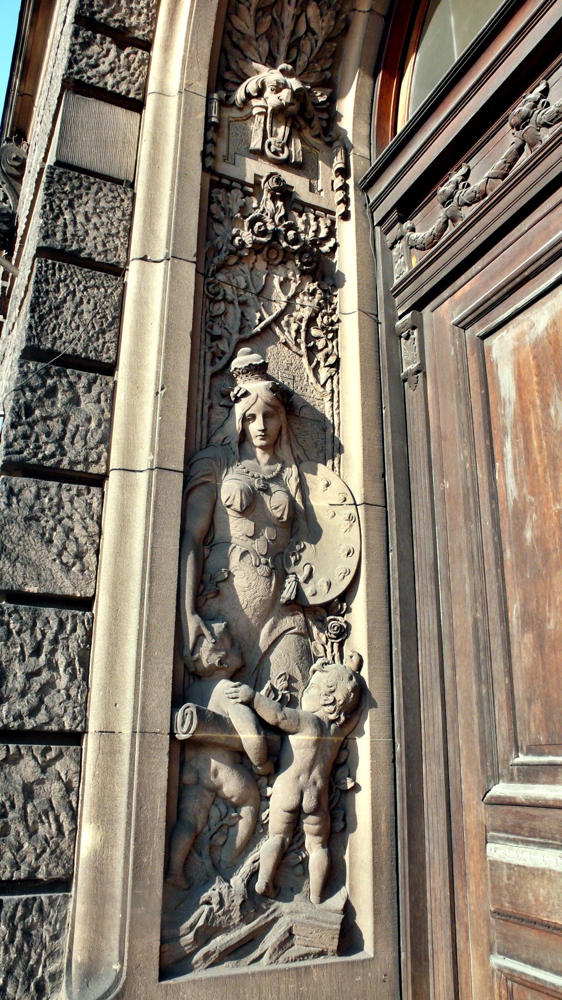

The soft bed is here again, changing between camping and comfortable surroundings.
After leaving MSI’s dorm in Moscow, I camped for another seven days before I reached Poland boarder.
At the boarder I stayed in another hotel to be freshened and energized.
After entering Poland it was another 3 days of camping.
Lying on the bed thinking about the places I have camped, I have camped at various places.
The nicest place I slept in was the abandoned house, the most interesting was the middle of the field,
and the worst was when I got kicked out when I was half asleep.
There is just 2000km (1243miles) left to the trip,
it can easily be accomplished in 15 days as long as I watch for my own safety.
Once I enter Europe, it will be toward the end of the trip.
If someone asks me how do I feel after traveling alone for over 100 days?
The people I met on the road said all said “you crazy?” followed by unbelievable looks on their face.
Looking at the just harvested field, nothing in sight, thinking how about camping here for the night,
but at the same time I am thinking am I crazy again?
Drinking with drunk Belarusian, eating birdseed, even without common language we can still chitchat,
but at the same time I am thinking am I crazy?
Camping in the middle of the night with the whole body shivering, rubbing my hands and arms against each other,
but all I felt was my goose bumps, but I am thinking am I crazy?
Of course, no doubt, I am crazy.
Looking at the red Gobi Desert under over 40C degrees weather,
riding in Kazakhstan with nothing in sight,
and riding in Russia freezing cold with my nose running even during the summer.
If I didn’t ride this trip with a crazy heart, I do not know how I can cross all those places.
There are lots of ways to live a life,
I won’t judge how other people live theirs, because this is each person’s own responsibility to themselves,
their choices to live their life.
Rather, there are lots of people who judges me, they use their values, limitations,
religion, and their thoughts all to restrict me.
All I can say is sorry, regardless how reasonable you are saying, even if it is rules, so what?
After all, you are not I,
and you will not be able to understand what motives and reasons why I am doing this.
The most important, I never live in someone’s expectations and praises, or blames and limitation,
you can call me selfish, big headed, but I don’t care how other people see me.
This is who I am, I do what I want to do, walk the roads I want to walk,
go to places I want to go, and live the life I want to live.
I lay flat on the bed after my shower, and I kept thinking and thinking, and my thoughts went into my dream,
all the way until morning.

In the morning, Goose drove taking me to get some Polish money, Zit.
Even though Zit is only useable in Poland, but it is a good currency.
Exchanging $100USD for Zit for me to use four days here, plus the exit fee out of Poland should be enough.
This is Goose’s Fiat, the body of the car is green but the engine top is red.
The red top is the result from Goose’s brother, Guerilla, hit a tree on some snowy winter.
I am not sure if the car fixer place is color blind, they didn’t care the color doesn’t fit, it is a car,
it is drivable, and so this is what it looks like now.
In Poznana it is hard to find a place to exchange currency,
all the signs are Polish although inside they will exchange anything for Zit.
Although most of their business are for eastern European countries that has not joined European Nation.
Using the exchange rate of $1USD to $2.9Zit for $100USD, on the Zit all it shows are the king’s old face,
although the coins are this pretty gold color, it looks like gold coins, I am reluctant to spend it now.
Although when I entered Poland I exchanged some USD to Zit at the grocery store
they give me the exchange rate of $1USD to $2.2Zit.
But since the exchange was made at a grocery store, all I can say is too bad I got cheated on, nothing I can do now.
Riding in Goose’s car, there are lots of red and yellow flowers planted in the middle.
Although the flowers are blooming very pretty right now,
but when winter comes with the snow the temperature is negative degrees, all those flowers freeze to death.
When it comes to spring, Poznana will dig up all the dead flowers and replant them.
This is to beautify the city, so they do this every year.
Some street in Poznana, the Sphinx on the left is where we had dinner last night.
As you can see beautiful girls are everywhere, but in the winter the girls are covered up.
People in Poland follow the law, the cars on the road have the smallest rights;
the first is the pedestrians, then the electric cars and bus, the last are private cars.
Cars running on the street must follow all signals, this include the lights, the signs,
there is no horn sound heard on the road.
Other than driving, people also follow rules in parking. Underneath the sign,
there will be markings showing how cars should be parked, straight or horizontal,
or half way in and half way on the street, no detail left behind.
The sign on the right side of the photo says the cars here all have to park
on the street inside the gray lines and has to be tilted, and here is free parking.
This is Poznana’s business trade exhibition center, but this is just the entrance.
Inside the space is huge, and there are several buildings as well; just looking at the door of this place is already amazing.
Before returning to the dorm, lets eat a meal of the traditional breakfast here.
The purple vegetable and pickled vegetable is the norm here.
This is traditional Polish sweet bun; the outside of the soft bread will be covered with chocolate or syrup,
inside it will also have jam or butter. The flavor is great and the price is cheap as well.
This is traditional Polish coffee, this is does not smell like coffee brewed by a machine.
Rather this is made by ground the coffee beans then add hot water without stirring and presented to the customers.
Before drinking, one must be careful of stirring well, and then wait a few minutes to let the coffee powder dissolve,
this tastes is very different from traditional coffee.
After drinking all of the liquid, you notice the undissolved coffee powder on the bottom of the cup.
For breakfast just simple orders of French fries, scrambled eggs with sliced sausages.
These are good but simple food with a big slice of bread, this takes care of the lunch as well.
Map of Poznana, this one is posted on the wall, but I got myself a personal map that includes suburb area of Poznana.
Poznana is a big city.
While at Goose’s dorm this morning I used high speed Internet.
The dorm I am staying in has Internet problem so I couldn’t get online.
So for the next few days I will have to go to Goose’s dorm to use the Internet.
In the afternoon I went to the old town to browse around,
that is Poznana’s oldest city and also the most popular city center.
Even though it is just the end of August,
but a lot of trees in the street already turned autumn colors.
In winter at Poznana, the sun doesn’t come up until 8:30am, and it gets dark around 4pm.
The sight from then is totally different from now.
The dated buildings are usually built with red bricks and red tile for roof;
it is hard to guess what those buildings are used for.
For example, these red buildings are the largest obstetrics and gynecology hospital in Europe,
each year they deliver over 6000 babies.
Other than being a university town in Poznana, it is also the largest medical center in Poland,
it occupies important medical field.
Another street, the tracks on the street and the electrical lines on the top are for electrical cars.
If the cross walks doesn’t have traffic signals,
then the pedestrians always have the right of way.
Even if there is traffic signal installed, only need to push this button
and in a few seconds the light will change for pedestrian right of way.
Cars driving on the road have 24 lights on policy, in the suburbs the speed limit is 70km, it is even slower in the city.
All the buildings on the street have their own personal taste, there are beautiful balcony and carvings seen everywhere.
Even with just browsing on the street with no destination in mind, this is a wonderful city to tour around in.
If lucky, one can even see hot air balloon with ads on them flying by,
in this day and age be able to see one of those is very rare.
The weather is good here on the weekend, there was thunderstorm on Thursday, and it was cloudy on Friday.
But the weather is cooperating; when I reached Poznana it is sunny, letting me to view the best possible.
The road with tracks on it, the cars can drive on it as well.
On the older roads they are not paved asphalt roads but stone paved.
When cars drive by the road shakes,
one has to be careful biting their tongue when walking and driving on stone covered road.
The police are not all over the streets either, if it is just small mistake,
for example like crossing the cross walk and did not get off to walk the bike,
and if the person didn’t know and made this mistake, the police will let this time slide.
Parking the car next to the national museum, there are random exhibitions.
The carving next to the front door, those things are very lucky to escape being destroyed by the war.

The mosaics on the sidewall of the museum.
The huge painting on the backside of the museum.
Each painting should be a story, for anyone who is interested can look for the story himself or herself.
For people who want can travel to Poland themselves, the reward will be even better.
This is mentioned before, the area to play soccer is even shown with a picture, and a hilarious picture is shown.
Behind the red bricks with the wall covered in stones is the old wall, inside the wall is the old city,
but it isn’t old at all; inside is full of life, beautiful, elegant, and full of culture.
The main city center of the old town is a square in shape; it does not allow any car, not even bicycles.
Beautiful girls is seen everywhere, even beautiful mothers, the least likely seen here are tourist.
If you have a chance to visit here, you might be the only tourist here.
I will post the front pictures of the beautiful girls later.
There is outdoors dining available at the square as well; they are all decorated well.
A lot of college students work here, English is acceptable here.
There are at least four fountains like this one on the square.
This one is holding a three-pronged trident so he should be Poseidon.
In the background there is a building with green pointy top,
it is Poznana City Hall, it is sitting right in the middle of the whole square.
All the carving here, each is carved just like it is alive; this looks like a human frozen in time.
The houses surrounding the square all have distinct characters;
the exterior, color, and style are all different.
They are all very colorful but not shocking.
The outdoor dining areas on the square mix in well do not destroy the look of the square.
The tallest one is the city office; it looks like a mixture of a church and a castle.
Ancient buildings and carvings are seen everywhere, and they are free for browsing.
They aren’t afraid for you to look, just afraid that you do not have time to see it all.

This is the street outside of the square, this is the center of the city center,
and the whole Poznana is developed from this point outward.
Even the washing sink at the square seems older than the people here,
pushing on the bronze knob, cold water will come out of the monster’s mouth.
Dirty water will exit in the sewer water; I am not sure in this ancient city how the sewer system is designed.
There are very few vendors selling postcards, flags, pinwheels, toys, clothing, and displays, just 2 or 3 of them.
This is another sign of very few tourists around.
The scary Teletubbies is here as well.
The strange plastic toys, after looking at what is sold at flea market,
the stuff is very normal compared to the things sold at the flea market.
All the postcards seen below are views of Poznana.
From the postcards everywhere seem very beautiful;
I am not sure in these few days if I have time to view all those places.
Painting area, these are all real painting, not copied works. It depends on your own view if it is good or bad.
There is art school in Poznana as well, not far from city center there is an art building with items that has useful art pieces.
This means the art pieces are not just for display but rather for use as well.
For example, this chair shaped like a horn, the building behind is the music instruments museum.
This is another way to use art, in the square the chairs are all weird shapes,
some doesn’t even look like chairs, but everyone sits there happily.
Walking halfway across the square you will see City Hall building.
There is painting and carving all over the wall.
The carriage walking around the square, there is a feeling of time going backwards to Renaissance time.
The fountain in front of the city hall, the carving is actually made out of stone,
so this one wouldn’t oxidize and turn green.
The Poznana’s city sign is two goats’ head against each other, just like the picture in front of this store.
There are lots of carving and pictures made based off this picture seen everywhere in the city.
In front of this restaurant the dried floral wreath is beautiful, just like what is shown on the picture.
The chef’s recommendation meal here is Cornish Game Hen.
The bar. In Poznana the streets are named after famous people so the street name are usually really long.
Thus the street names are abbreviated to fit in the street sign.
Some bookstore building, this is Poznana’s city planner; he is very good to plan Poznana to be the way it is today.
The below sign says “STARY RYNEK” which means “old market”.
This sign is seen everywhere in the four corners of the square.
All the buildings in the square all use this name, STARY RYNEK, as an address.
The 89/90 sign on the door is the home number, some homes will even has gas pipe number shown as well,
this is in case if something happens, the gas company will know which gas pipe they need to deal with.
Another street connected to the square, the car is only able to drive this far.
Since we are on the topic of cars, lets mention about Polish drivers.
The cars with an L sign on the top are all new drivers.
Regardless how badly those new drivers drive, even mistakes that makes the road backs up,
there won’t be anyone honking at them.
Even though the L sign makes the car looks idiotic, but the trade off is the enormous courtesy from other drivers.
This is the parking meter.
When you park somewhere that requires pay, prepay for a ticket and then leave it on the car windshield,
otherwise the fine is really high for no pay parking ticket.
There are price differences for parking depending on where, the red area is the most expensive,
the green is the cheapest, and the same goes the longer you park the more expensive it is.
For example parking for 10 minutes is $10, but if continuously parking for 20 minutes it might be $30,
and if parking for total 30 minutes might be $100.
The reason for this is for the drivers not to occupy one spot for too long, or don’t even driver the car out.
This is in contrast to public transportation, the longer you use it, and the cheaper it is.
The reasoning is having everyone using public transportation.
Walking outside of the alley way will see a whole brick wall still in perfect condition.
Inside this wall is art museum; I bet a lot of the art pieces on the square are from them.
There are also history majors, so other than studying at school,
the students also responsible for maintaining the church in this city.
Not only is this putting what you learned into use, but also fusing the people and the city together,
so the city will always be part of people’s lives.
This is also a Fiat, but it is locked up due to having tickets.
For cars with unpaid ticket, the cops will just lock them up on the street.
The driver can call the police station from the number shown on the lock, then someone will come and hand you a ticket.
You must pay the ticket right there, and then they will unlock the lock for you.
There is lots of street lightening, the whole neighborhood is the same design,
and so in the evening the lights will give the city another look.
For the bigger buildings, such as City Hall, church, or castle, there are designated lights for the evening.
This makes the city safer even at night.
This sign designate this is use for bicycles only.
Riding on uneven road like this, the bones in the whole body will shake to pieces.
In Poznana tourist center, Goose got me a copy of Poznana map and main attractions,
so now I can tour around the city on my own with the map.
Of course those are all free, in Europe as long as the sign has “i” on it,
it is designed for information, all the pamphlets are for taking.
Getting tired after the walk, so stopping at the sidewalk café to rest;
all the sidewalk cafes have great business, almost everyplace is filled.
The decoration isn’t cheap either; it feels like sitting in a garden.
This is live band, performing around the sidewalk café.
Pleasing music flows through the whole square, with the addition of the church bells ringing at times,
the view, sound, and smell are all in enjoyment.
The very tiny coffee just a little bit bigger than the thumb, filled 1/3 full, looks like someone has drunk it already.
But this is regular sized condensed coffee.
If you want water, order coffee first. The restaurants here,
or European restaurants, water cost money, and might not be cheaper than beverage drinks.
This is what I ordered, extra fancy peach ice cream, and there are two sticks of cookies sticking out.
After eating snack, we continue to browse around.
There is no need to talk about windows without ugly metal bars,
the beautiful red flowers grown all over the balcony is extremely pretty.
Walking away from the square, in somewhere you will see this bicycle statue, postcards and tour guides all have him on it.
However, this famous statue isn’t a real person.
Back in time this is a character from a newspaper story, everyone knows him.
Maybe the statue I saw in Moscow of the grandpa on bicycle might have a story behind him as well.
Inserting a beautiful girl picture, Polish girls are known to be the most beautiful girls in Europe;
they have excellent exterior, good character, beautiful with lots of energy, and friendly as well.
On the streets you will see lots of girls having weird hairstyles like you saw in magazines,
they will also wear weird clothing; Polish girls aren’t far away from what is hot in fashion.
Seeing so many beautiful girls, other than being surprised, there is no time for pictures.
Please go to Poznana yourself if you like to see beautiful girls.
Streets in Poznana, the longer I see it the better it is.
Eating dinner at this restaurant, the most famous dish is their salad; the sign says Green Balcony
It is hard to eat fresh produce during the trip, most of the time just juice.
When I see fresh produce I will buy some to eat.
When Goose brought other people here to eat their reaction was “coming here is like eating grass”
so I ask Goose bringing me here to eat a good grass meal.
The restaurant has lots of small bees hanging for decoration, each year the decoration changes; last year was sheep.
The restaurant has good vibe to it, and the meal isn’t so shockingly expensive either.
This is similar to what you get in Europe, but the price is just 1/4 of what you would normally pay in Europe.
I plan to come to Poland in the future and take my time around to see everything.
The lamps on the table are pretty, and the smell of tasty food flowing around,
I am hungry, bring the menu fast so we can order.
The waitress is a beautiful girl, she happens to be the girl friend of Goose’s classmate.
Too bad she is taken already, so regardless how good a friend anyone is at this point,
all I can say they are monster taking the beautiful girls.
The full and thick menu is written by hand, it is not I don’t understand Russian or Polish;
even looking at English menus confuses me.
Even though the price here is cheaper than the rest of Europe, but Pozana’s cost of living rises every year as well.
The same salad with pricing on the right side originally being $23Zit ($8.36USD) is now $25Zit ($9USD);
the same goes for originally $27Zit ($9.81USD) is now $30Zit ($10USD).
After ordering just waiting for my good meal. The drinks came first;
this is cold red tea with the addition of watermelon balls.
The large sized cold tea with watermelons I can eat, I recommend this.
With Goose we are sharing a big plate of salad, the portion here is amazingly large,
anyone who can finish his or her meal alone should be applauded.
Inside the basket there are utensils, condiments, butter, bread, and a bottle of sweet and sour salad dressing.
The delicious salad is here, it is too big and there are lots of goods underneath, one photo cannot fit it all.
For people who are just looking but can’t eat it, just restrain yourself for this section.
On the very top of the salad are grilled chickens; on the bottom there are lettuce,
grapes, tomatoes, cucumbers, spouts, and some dried fruit.
The salad has honey sauce on it, taking a little of everything.
Each plate looks and tastes delicious, if you say this is like eating grass is not giving it enough credit.
For people who are hungry and looking at the wonderful meal above probably already run away for help;
after eating a wonderful meal, on the way home saw this ad prompting this famous artist named Mucha.
He was born in the former Austrian empire, but is Czechoslovakian.
His painting style is like the poster, the people in the painting are realistic style,
and the clothing and background uses beautiful styles with flowers and grass for decoration.
The time I am at Poznana happens to be the same time for his art show,
I will find some time to go see his painting exhibition, continuously eating good food will deplete me of art cells.
Before going back to the dorm we climbed to this dorm which happens to be the oldest and the tallest one.
They were able to build something this tall 20-30 years ago;
the exterior looks like a jail cell with thick carving feel.
The dorm is very old; everything inside is old including the elevator.
The door to the elevator is a knob, the same way as opening a door by pulling out;
it is hard to see this is an elevator from the outside.
The architecture inside the dorm is old, although we are not sure the condition inside the rooms itself.
It has been so old; it must be interesting if living in there.
Looking at Poznana at the very top of the building, the planning of this green city is amazing.
Other than the red roof tops, everything else is covered with green trees.
This is the first day touring in Poznana, staying in this city for a while, not in a hurry to leave at all.